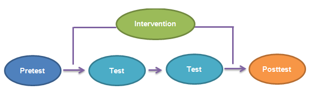
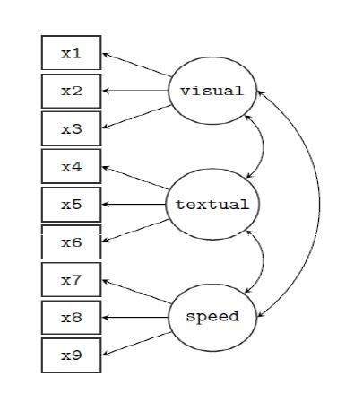
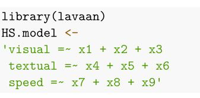

Bölüm 9 Ölçme Değişmezliği
Ölçme araçlarından elde edilen puanları genellikle bireylerin davranışları hakkında çıkarımlarda bulunmak için kullanılır.
Yüksek bir güvenirlik katsayısı bireylerin puanlarında tutarlık olduğunu belirtir ancak bireylerle ilgili savunulabilir çıkarımlarda bulunmayı garantilemez!
Test puanlarından yapılacak çıkarımların doğruluğunun derecesi geçerlik olarak tanımlanır.
- Geçerlik; elde edilen puanların anlamlarının ve kullanımlarının, değerlendirmenin yapılış amacına uygunluğu ve bu amaç için yeterliliğidir.
- Geçerlik, tekil bir kavramdır. Farklı geçerlik türleri yoktur. Farklı geçerlik kanıtı sağlama yolları ve farklı geçerlik kanıtı kaynakları vardır.
Geçerlik İçin Olası Kaynaklar
- Test kapsamına dayalı kanıt
- Yanıtlama süreçlerine dayalı kanıt
- Diğer değişlenlerle ilişkilere dayalı kayıt
- İç yapıya dayalı kanıt
- Test sonuçlarına dayalı kanıt
-
İç yapıya dayalı kanıt-Olcme Degismezligi

Ölçme değişmezliği incelemeleri iki genel yaklaşımla incelebilmektedir.
Yapısal Eşitlik Modelleri (YEM)
Madde Tepki Kuramı'na (MTK)
9.1 Ölçme Değişmezliği Aşamları
Modeli belirleme (model specification)
Tanımlama (identification)
Hesaplama (estimation)
Uyumun testi (testing fit)
Yeniden belirleme (respecification) aşamalarından oluşmaktadır.
9.2 YEM-Aşamaları
Model Uyumu
| Uyum İndisi | İyi Uyum | Kabul Edilebilir Uyum |
|---|---|---|
| \[ | \] | X^2 | p>0.05 | \[ | \] | | ||
| \[ X^2/df \] | \[ 0\le X^2/df \le 2 \] | \[ 2 < X^2/df \le 5 \] |
| \[ SRMR \] | \[ 0\le SRMR\le .05 \] | \[ .05 < SRMR\le .08 \] |
| \[ RMSEA \] | \[ 0\le RMSEA\le .05 \] | \[ .05 < RMSEA\le .08 \] |
| \[ CFI \] | \[ .95\le CFI\le .1 \] | \[ .90\le CFI < .95 \] |
9.2.1 Ölçme Değişmezliği Modelleri
Şekil değişmezliği (configural invariance) modeli
Zayıf değişmezlik (weak invariance) modeli
Güçlü değişmezlik (strong invariance) modeli
Katı değişmezlik (strict invariance) modeli
2 faktör 6 gösterge de toplam hesaplanabilen parametre sayısı

Serbest model ve sınırlandırılmış model yuvalanmış modeller olup sınırlandırılmış model serbest modelin içinde yuvalanmıştır.
-
Bu nedenle sınırlandırılmış modelin veriye serbest modele göre anlamlı olarak daha kötü uyum sağlayıp sağlamadığını belirlemek için ki-kare fark testi kullanılabilir.
\[X^2_{dif} = X^2_{sinir} - X^2_{serbest}\]
\[df_{dif} = df_{sinir} - df_{serbest}\]
Şekil değişmezliği (configural /pattern invariance)
Gruplar aynı genel faktör yapısına sahip mi?
en az kısıtlayıcı model
model veri ile uyumlu değilse, hiç bir temel düzeyde geçerli olmaz.
| Grup 1 | Grup 2 |
|---|---|
| \[ y_{11s} = \mu_{11} + \lambda_{11}F_{1s} + e_{11s}\] | \[ y_{12s} = \mu_{12} + \lambda_{12}F_{1s} + e_{12s}\] |
| \[ y_{21s} = \mu_{21} + \lambda_{21}F_{1s} + e_{21s}\] | \[ y_{22s} = \mu_{22} + \lambda_{22}F_{1s} + e_{22s}\] |
| \[ y_{31s} = \mu_{31} + \lambda_{31}F_{1s} + e_{31s}\] | \[ y_{32s} = \mu_{32} + \lambda_{32}F_{1s} + e_{32s}\] |
| \[ y_{41s} = \mu_{41} + \lambda_{41}F_{2s} + e_{41s}\] | \[ y_{42s} = \mu_{42} + \lambda_{42}F_{2s} + e_{42s}\] |
| \[ y_{51s} = \mu_{51} + \lambda_{51}F_{2s} + e_{51s}\] | \[ y_{52s} = \mu_{52} + \lambda_{52}F_{2s} + e_{52s}\] |
| \[ y_{61s} = \mu_{61} + \lambda_{61}F_{6s} + e_{61s}\] | \[ y_{62s} = \mu_{62} + \lambda_{62}F_{2s} + e_{62s}\] |
-
Alt indislerin ilki madde, ikincisi grup için kullanılmıştır.
Zayıf Değişmezlik (Metric/Weak factorial invariance)
Gruplar aynı faktör yüklerine sahip mi?
her bir göstergenin yükü (standartlaştırılmış katsayısı üzerinde gruplarda eşitlik kısıtı getirilir.
| Grup 1 | Grup 2 |
|---|---|
| \[ y_{11s} = \mu_{11} + \boldsymbol{\lambda_{1}F_{1s}}+ e_{11s}\] | \[ y_{12s} = \mu_{12} + \boldsymbol{\lambda_{11}F_{1s}}+ e_{12s}\] |
| \[ y_{21s} = \mu_{21} + \boldsymbol{\lambda_{2}F_{1s}} + e_{21s}\] | \[ y_{22s} = \mu_{22} + \boldsymbol{\lambda_{2}F_{1s}} + e_{22s}\] |
| \[ y_{31s} = \mu_{31} + \boldsymbol{\lambda_{3}F_{1s}} + e_{31s}\] | \[ y_{32s} = \mu_{32} + \boldsymbol{\lambda_{3}F_{1s}} + e_{32s}\] |
| \[ y_{41s} = \mu_{41} + \boldsymbol{\lambda_{4}F_{2s}} + e_{41s}\] | \[ y_{42s} = \mu_{42} + \boldsymbol{\lambda_{4}F_{2s}} + e_{42s}\] |
| \[ y_{51s} = \mu_{51} + \boldsymbol{\lambda_{5}F_{2s}} + e_{51s}\] | \[ y_{52s} = \mu_{52} + \boldsymbol{\lambda_{5}F_{2s}} + e_{52s}\] |
| \[ y_{61s} = \mu_{61} + \boldsymbol{\lambda_{6}F_{2s}} + e_{61s}\] | \[ y_{62s} = \mu_{62} + \boldsymbol{\lambda_{6}F_{2s}} + e_{62s}\] |
Güçlü Değişmezlik (Strong/Scalar invariance)
Gruplar aynı gösterge sabitlerine sahip mi?
eşit standartlaştırılmış kesen değere sahip mi?
| Grup 1 | Grup 2 |
|---|---|
| \[ y_{11s} = \boldsymbol{\mu_{1}} + \boldsymbol{\lambda_{1}F_{1s}}+ e_{11s}\] | \[ y_{12s} = \boldsymbol{\mu_{1}} + \boldsymbol{\lambda_{11}F_{1s}}+ e_{12s}\] |
| \[ y_{21s} = \boldsymbol{\mu_{2}} + \boldsymbol{\lambda_{2}F_{1s}} + e_{21s}\] | \[ y_{22s} = \boldsymbol{\mu_{2}} + \boldsymbol{\lambda_{2}F_{1s}} + e_{22s}\] |
| \[ y_{31s} = \boldsymbol{\mu_{3}}+ \boldsymbol{\lambda_{3}F_{1s}} + e_{31s}\] | \[ y_{32s} = \boldsymbol{\mu_{3}} + \boldsymbol{\lambda_{3}F_{1s}} + e_{32s}\] |
| \[ y_{41s} = \boldsymbol{\mu_{4}} + \boldsymbol{\lambda_{4}F_{2s}} + e_{41s}\] | \[ y_{42s} = \boldsymbol{\mu_{4}} + \boldsymbol{\lambda_{4}F_{2s}} + e_{42s}\] |
| \[ y_{51s} = \boldsymbol{\mu_{5}}+ \boldsymbol{\lambda_{5}F_{2s}} + e_{51s}\] | \[ y_{52s} = \boldsymbol{\mu_{5}} + \boldsymbol{\lambda_{5}F_{2s}} + e_{52s}\] |
| \[ y_{61s} = \boldsymbol{\mu_{6}} + \boldsymbol{\lambda_{6}F_{2s}} + e_{61s}\] | \[ y_{62s} = \boldsymbol{\mu_{6}} + \boldsymbol{\lambda_{6}F_{2s}} + e_{62s}\] |
Gruplar aynı artık varyanslara sahip mi?
| Grup 1 | Grup 2 |
|---|---|
| \[ y_{11s} = \boldsymbol{\mu_{1}} + \boldsymbol{\lambda_{1}F_{1s}}+ \boldsymbol{e_{1s}}\] | \[ y_{12s} = \boldsymbol{\mu_{1}} + \boldsymbol{\lambda_{11}F_{1s}}+ \boldsymbol{e_{1s}}\] |
| \[ y_{21s} = \boldsymbol{\mu_{2}} + \boldsymbol{\lambda_{2}F_{1s}} + \boldsymbol{e_{2s}}\] | \[ y_{22s} = \boldsymbol{\mu_{2}} + \boldsymbol{\lambda_{2}F_{1s}} + \boldsymbol{e_{2s}}\] |
| \[ y_{31s} = \boldsymbol{\mu_{3}}+ \boldsymbol{\lambda_{3}F_{1s}} + \boldsymbol{e_{3s}}\] | \[ y_{32s} = \boldsymbol{\mu_{3}} + \boldsymbol{\lambda_{3}F_{1s}} + \boldsymbol{e_{3s}}\] |
| \[ y_{41s} = \boldsymbol{\mu_{4}} + \boldsymbol{\lambda_{4}F_{2s}} + \boldsymbol{e_{4s}}\] | \[ y_{42s} = \boldsymbol{\mu_{4}} + \boldsymbol{\lambda_{4}F_{2s}} + \boldsymbol{e_{2s}}\] |
| \[ y_{51s} = \boldsymbol{\mu_{5}}+ \boldsymbol{\lambda_{5}F_{2s}} + \boldsymbol{e_{5s}}\] | \[ y_{52s} = \boldsymbol{\mu_{5}} + \boldsymbol{\lambda_{5}F_{2s}} + \boldsymbol{e_{5s}}\] |
| \[ y_{61s} = \boldsymbol{\mu_{6}} + \boldsymbol{\lambda_{6}F_{2s}} + \boldsymbol{e_{6s}}\] | \[ y_{62s} = \boldsymbol{\mu_{6}} + \boldsymbol{\lambda_{6}F_{2s}} + \boldsymbol{e_{6s}}\] |
9.3 Özet
Ölçme Değişmezliği Hiyerarşik Modellerinde Serbest Tahminlenen ve Sabitlenen Parametreler [Gregorich, 2006]
| Model | Serbest Parametre | Sabitlenen Parametre |
|---|---|---|
| Sekil | Madde/Faktor grupları | - |
| Zayıf | +Faktor yukleri | Faktör varyans ve kovaryansları |
| Guclu | +Madde Sabitleri | +Faktör ve gözlenen degisken ortalamaları |
| Katı | +Madde artık varyansları | +Gozlenen varyans ve kovaryanslar |
9.4 Özet
DFA modelini her grupta ayrı ayrı test ediniz.
Özdeş faktör yapısını eş zamanlı test ediniz.
Faktör yüklerinin eşitliğini test ediniz.
Gösterge sabitlerinin eşitliğini test ediniz.
Gösterge artık varyanslarının eşitliğini test ediniz.
Faktör varyanslarının eşitliğini test ediniz.
Faktör kovaryanslarının eşitliğini test ediniz.
-
Faktör ortalamalarını test ediniz.
(Brown, 2015; Şen, 2020)
9.5 Uygulama
| Model | Kod |
|---|---|
|  |  |
DFA modelini her grupta ayrı ayrı test ediniz.
library(lavaan)
HS.model <- 'visual =~ x1 + x2 + x3
textual =~ x4 + x5 + x6
speed =~ x7 + x8 + x9'
Pasteur <- subset(HolzingerSwineford1939,
school=="Pasteur")
Grandwhite <- subset( HolzingerSwineford1939,
school=="Grant-White")
Pasteur_cfa <- cfa(HS.model, data=Pasteur)
Grandwhite_cfa <- cfa(HS.model, data=Grandwhite)
fit <- c("chisq", "df", "pvalue","rmsea", "srmr","cfi")
fitmeasures(Pasteur_cfa, fit.measures = fit)
fitmeasures(Grandwhite_cfa,fit) chisq df pvalue rmsea srmr cfi
64.309 24.000 0.000 0.104 0.077 0.903
chisq df pvalue rmsea srmr cfi
51.542 24.000 0.001 0.089 0.072 0.941 Özdeş faktör yapısını eş zamanlı test ediniz.
configural <- cfa(HS.model, data=HolzingerSwineford1939,
group = "school")
# bicimsel degimezlik
fitmeasures(configural, fit.measures = fit) chisq df pvalue rmsea srmr cfi
115.851 48.000 0.000 0.097 0.068 0.923 Faktör yüklerinin eşitliğini test ediniz.
weak <- cfa(HS.model,data=HolzingerSwineford1939, group = "school",
group.equal=c("loadings"))
# bicimsel degimezlik
fitmeasures(configural, fit.measures = fit)
# zayıf degimezlik
fitmeasures(weak, fit.measures = fit) chisq df pvalue rmsea srmr cfi
115.851 48.000 0.000 0.097 0.068 0.923
chisq df pvalue rmsea srmr cfi
124.044 54.000 0.000 0.093 0.072 0.921 Modeller arası uyumu degerlendirme
| Df | AIC | BIC | Chisq | Chisq diff | RMSEA | Df diff | Pr(>Chisq) | |
|---|---|---|---|---|---|---|---|---|
| configural | 48 | 7484.395 | 7706.822 | 115.8513 | NA | NA | NA | NA |
| weak | 54 | 7480.587 | 7680.771 | 124.0435 | 8.1922 | 0.0492716 | 6 | 0.2243577 |
Zayıf degismezlikte kestirilen faktor yukleri
parEst <- parameterEstimates(weak) %>%
filter(op == "=~") %>%
select('Latent Factor'=lhs, Indicator=rhs, B=est) Zayıf degismezlikte kestirilen faktor yukleri
| Latent Factor | Indicator | Grup_1_B | Grup_2_B |
|---|---|---|---|
| visual | x1 | 1.000 | 1.000 |
| visual | x2 | 0.599 | 0.599 |
| visual | x3 | 0.784 | 0.784 |
| textual | x4 | 1.000 | 1.000 |
| textual | x5 | 1.083 | 1.083 |
| textual | x6 | 0.912 | 0.912 |
| speed | x7 | 1.000 | 1.000 |
| speed | x8 | 1.201 | 1.201 |
| speed | x9 | 1.038 | 1.038 |
Zayıf degismezlikte kestirilen madde sabitleri
| obs | Group_1_int | Group_2_int |
|---|---|---|
| x1 | 4.941 | 4.930 |
| x2 | 5.984 | 6.200 |
| x3 | 2.487 | 1.996 |
| x4 | 2.823 | 3.317 |
| x5 | 3.995 | 4.712 |
| x6 | 1.922 | 2.469 |
| x7 | 4.432 | 3.921 |
| x8 | 5.563 | 5.488 |
| x9 | 5.418 | 5.327 |
Gösterge sabitlerinin eşitliğini test ediniz.
strong <- cfa(HS.model, data=HolzingerSwineford1939,
group = "school", group.equal=c("loadings","intercepts"))
fitmeasures(weak,fit.measures = fit)
# guclu degimezlik
fitmeasures(strong,fit.measures = fit) chisq df pvalue rmsea srmr cfi
124.044 54.000 0.000 0.093 0.072 0.921
chisq df pvalue rmsea srmr cfi
164.103 60.000 0.000 0.107 0.082 0.882 Modeller arası uyumu degerlendirme
| Df | AIC | BIC | Chisq | Chisq diff | RMSEA | Df diff | Pr(>Chisq) | |
|---|---|---|---|---|---|---|---|---|
| weak | 54 | 7480.587 | 7680.771 | 124.0435 | NA | NA | NA | NA |
| strong | 60 | 7508.647 | 7686.588 | 164.1028 | 40.05929 | 0.194211 | 6 | 4e-07 |
| \(X^2\) | sd | \(X^2_{d}\) | \(\Delta\)sd | p | RMSEA | SRMR | CFI | |
|---|---|---|---|---|---|---|---|---|
| Şekil | 115.851 | 48 | 0.097 | 0.068 | 0.923 | |||
| Biçimsel | 124.044 | 54 | 8.1922 | 6 | 0.22 | 0.093 | 0.072 | 0.921 |
| Güçlü | 164.044 | 60 | 6 | <0.01 | 0.107 | 0.082 | 0.882 | |
9.6 Kaynakca
- Kelecioğlu, H. & Göçer Şahin, S . (2014). Geçmişten günümüze geçerlik . Journal of Measurement and Evaluation in Education and Psychology , 5 (2) , 1-11 . DOI: 10.21031/epod.41706 link
- AERA,APA, & NCME (2004). Standards for Educational and Psychological Testing. Washington, DC: American Educational Research Association link
- Kline, R. B. (2006). Structural equation modeling.Guilford Press.
- Şen, S. Mplus ile Yapısal Eşitlik Modellemesi Uygulamaları. Nobel Yayınevi.
- Vandenberg RJ, Lance CE. A Review and Synthesis of the Measurement Invariance Literature: Suggestions, Practices, and Recommendations for Organizational Research. Organizational Research Methods. 2000,3(1), 4-70. doi:10.1177/109442810031002
- Wu, A. D., Li, Z., & Zumbo, B. D. (2007). Decoding the meaning of factorial invariance and updating the practice of multi-group confirmatory factor analysis: A demonstration with TIMSS data. Practical Assessment, Research and Evaluation, 12(3). https://doi.org/10.7275/mhqa-cd89